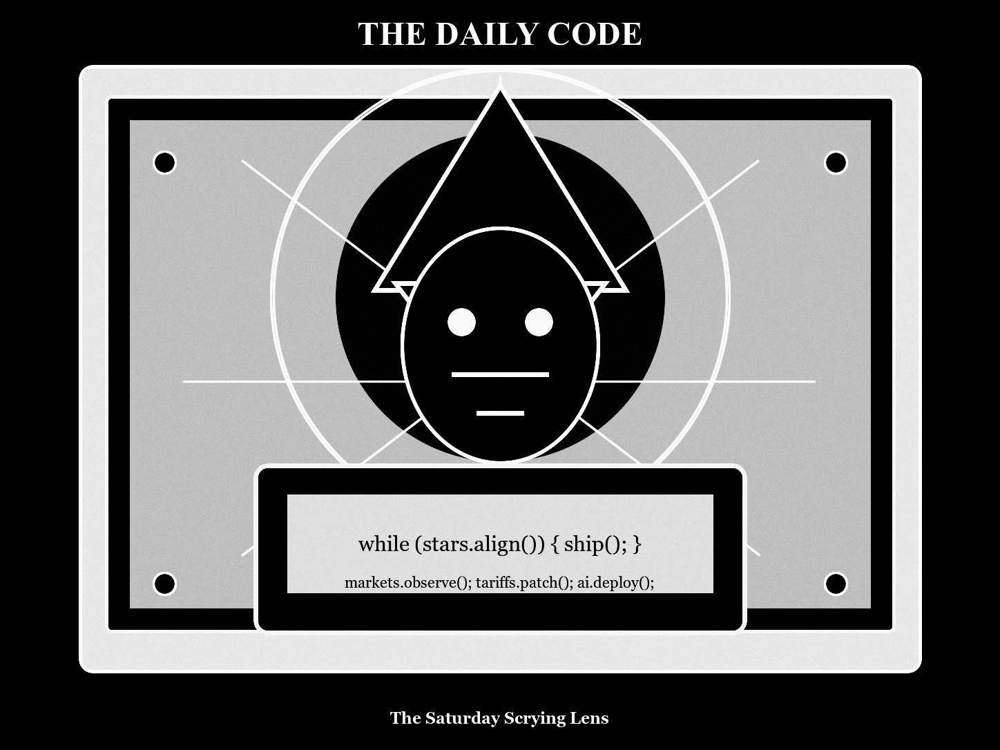

Morning Edition
6:00 AM CDTFinance & Markets
Markets End the Week Under a Cautious Moon
Wall Street finished Friday mixed as oil finally cooled after a week of war-premium anxiety. The S&P 500 barely rose, the Dow gained ground, and the Nasdaq slipped as investors weighed Iran-war risk, fresh tariffs, AI spending, and next week's Fed decision.
Source: AP markets report, July 24, 2026Tariffs Recompile the Inflation Story
The White House announced new 10% to 12.5% tariffs on imports from 60 countries, saying the penalties target weak forced-labor enforcement. Business groups warn the duties could keep prices sticky just as fuel costs and shipping worries are already pressuring household budgets.
Source: AP tariff explainer, July 25, 2026Private Equity Buys the Pipes
Blackstone, KKR, and Brookfield are taking a 49% stake in a Kuwait pipeline venture valued at $16 billion. It is a classic 2026 private-capital spell: governments get upfront cash, infrastructure stays essential, and investors collect long-duration cash flows in a tense energy map.
Source: Financial Times private equity report, July 25, 2026World & US
Washington Opens a Tech-Trade Grimoire
President Trump says the U.S. will investigate European Union trade practices after EU fines against Google and other American tech companies. The move ties digital regulation, antitrust penalties, and tariff retaliation into one larger transatlantic dispute.
Source: AP U.S.-EU trade report, July 25, 2026Energy Security Gets Tangible
Kuwait's pipeline stake sale lands against a backdrop of missile and drone attacks on regional infrastructure, making the deal feel less like spreadsheet finance and more like a bet on hardened logistics, oil resilience, and Gulf state balance sheets.
Source: Financial Times Kuwait infrastructure report, July 25, 2026Policy Risk Stays on the Dashboard
The weekend opens with three live macro variables: tariff implementation, Middle East escalation, and AI-capex scrutiny. The practical read is not panic; it is dependency mapping. Know which inputs can move your costs, customers, and attention span.
Source: AP tariff explainer and AP markets report, July 24-25, 2026
The Saturday Scrying Lens: a code-mage watches tariffs, pipelines, enterprise agents, Starship telemetry, and crypto risk resolve into the morning build.
"The Saturday spell is to make the system quieter before asking it for speed."- The Developer's Almanac
Sagittarius Horoscope
Justin, Sagittarius gets a quieter signal today: guard your time, do not let hidden stress drain the battery, and step back from any fast financial decision. The Rat overlay brings a fresh-beginning charm, but it works best through tidy systems and deliberate moves. Developer translation: close one open loop, make one dependency explicit, and let the weekend build from a stable commit. Lucky hex: #1f2937. Lucky command: git diff --check && npm test.
Tech, AI, Space & Crypto
-
OpenAI Moves From Models to Workflows
OpenAI's Presence product pushes beyond model access into enterprise agent infrastructure: internal data connectors, guardrails, simulations, human review, and voice or chat workflows. The AI stack is becoming less about demos and more about operational trust.
Source: Business Insider AI report, July 23, 2026 -
Open Models Get a Lobbying Push
Microsoft, Meta, Nvidia, OpenAI, Palantir, and others signed a letter urging Washington not to broadly restrict open-weight AI models. Their argument: punish proven bad actors, but keep the open-model ecosystem alive for innovation, safety research, and sovereignty.
Source: Business Insider open AI report, July 25, 2026 -
Starship Flight 13 Sends Back the Good Logs
SpaceX's Starship Flight 13 lifted off July 24 after delays, testing V3 hardware, Starlink V3 deployment, and splashdown objectives. The mission's best artifact is telemetry: every clean phase removes uncertainty from future moon, Mars, and orbital-refueling work.
Source: Space.com Starship report, July 24, 2026 -
Crypto Holds a Risk-Off Candle
Bitcoin is hovering near $64,000 while Ethereum underperforms around $1,856. The message is subdued but useful: ETF demand may help, yet macro risk appetite still owns the short-term tape.
Source: Economic Times crypto report, July 25, 2026 -
Saturday Build Note
Today's best engineering move is to reduce ambiguity before increasing velocity. Write down the real constraint, remove one stale assumption, and let the next action become obvious.
Source: The Daily Code desk, July 25, 2026
Morning Compile
- Start with the quietest fix that improves the whole day.
- Review the diff before the calendar gets loud.